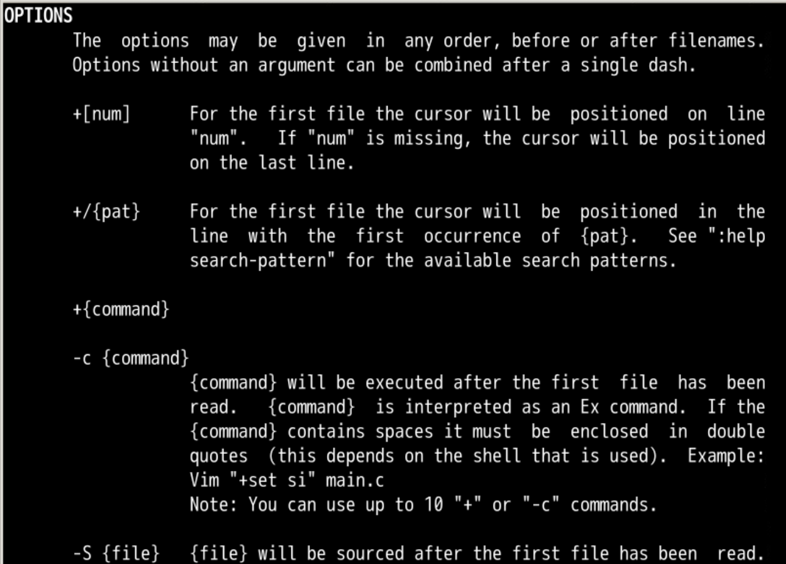
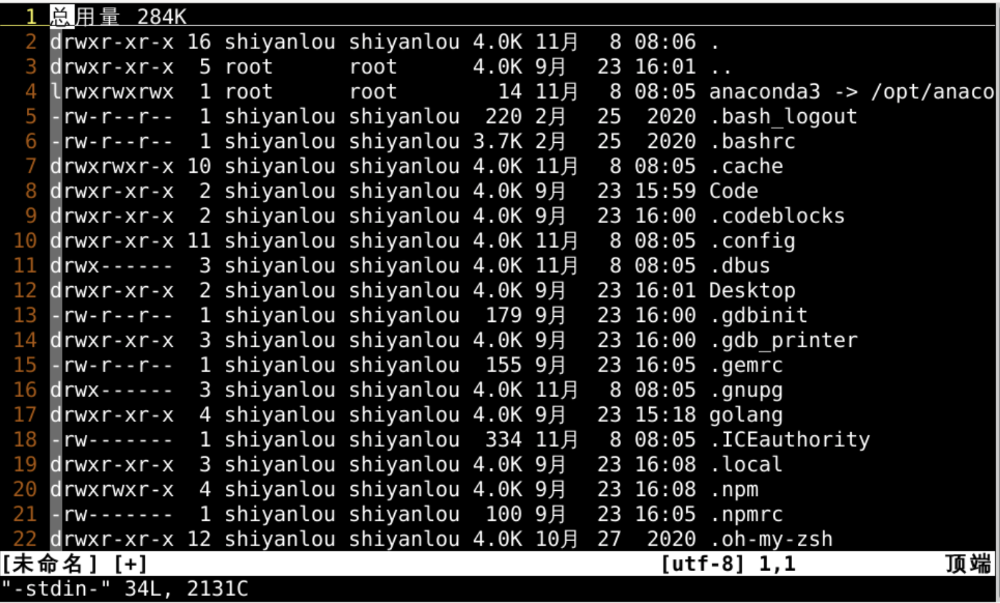
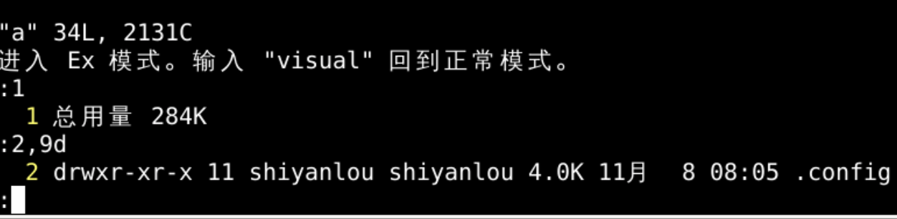
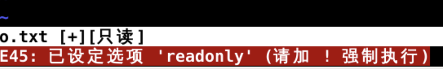
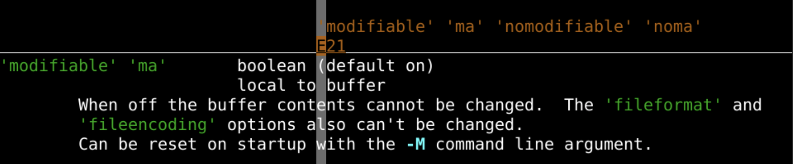
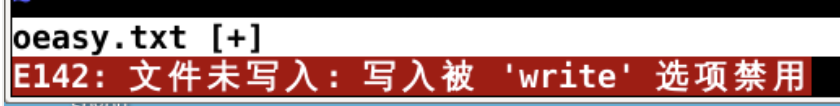
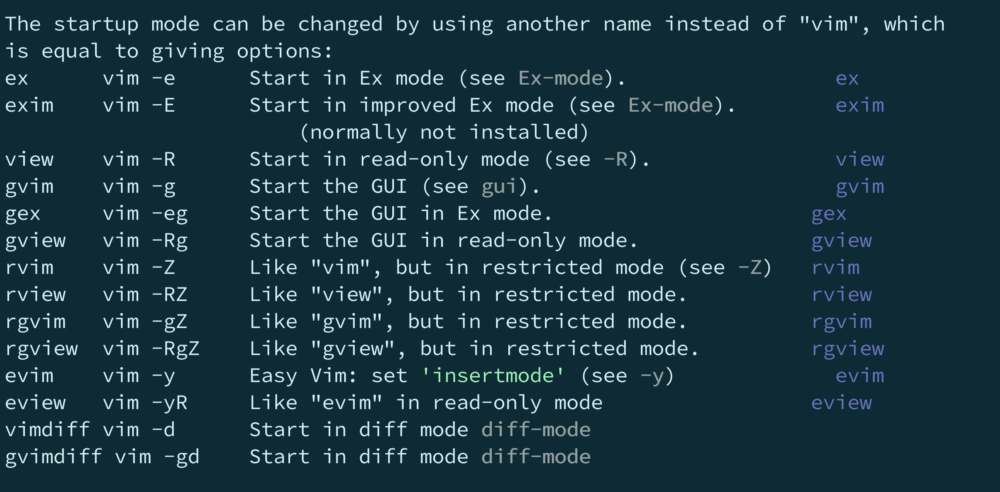

vim选项
从头开始
- 这次我们从头开始
- 从进入vim之前开始
- 我们可以在终端里面给
vim怎么样的参数呢？ man vim- 这个如果不行的话
- 要先运行
unminimize更新manual
- 也可以在vim中运行命令行
:h starting
- 我们可以看到我们
- 除了把
oeasy.txt作为文件名参数给vim之外 - 还可以给
vim一些选项开关
- 除了把
添加参数进行跳转

- 我们首先
ls -lah > oeasy.txt - 然后
vi +4 oeasy.txt- 光标会出现在第
4行 - 比如某位置有个关键参数
- 可以这样直接跳到那一行
- 执行之后
- 退出vim，回到终端
- 光标会出现在第
- 运行
vi +/shiyanlou- 进入后
- 光标在搜索到的第一个
shiyanlou - 执行之后
- 回到终端
- 命令行参数除了能快速跳转
- 还能干什么呢？
执行命令
- 运行命令
vi +%s/shiyanlou/oeasy/g oeasy.txt- 先用
vim打开文件oeasy.txt - 再运行命令
:%s/shiyanlou/oeasy/g - 这用的是 +{command} 的形式
%s/shiyanlou/oeasy/g就是+的{command}
- 先用
vi +%s/shiyanlou/oeasy/g +%s/4.0K/o2z/g oeasy.txt- 先用
vim打开文件oeasy.txt - 再运行命令
:%s/shiyanlou/oeasy/g - 再运行命令
:%s/4.0K/o2z/g - 这样就可以执行两条命令
- 先用
- 也可以运行命令
-cvi -c %s/shiyanlou/oeasy/g oeasy.txt- 相当于
vi +%s/shiyanlou/oeasy/g oeasy.txt - 这用的是 -c {command}的形式
- 动手试试
管道传入
vi -可以接受到stdin传过来的数据- 我们可以使用管道
| ls -lah | vi -
- 我们可以使用管道

ex-mode
vi -e oeasy.txt可以用ex模式打开oeasy.txt- 也可直接
ex oeasy.txt
- 也可直接
- 进入ex-mode之后，可以执行命令行,不用再打冒号
:1:%p:2,9d:1,$:q退出

- 可以退回到正常模式
:visual
- 还可以切换出ex-mode子窗口
Q
只读模式
- 可以使用
vi -R oeasy.txt - 也就是
view oeasy.txt - 在这种模式下，只能查看不能修改

- 但是如果你强制写
:w!- 还是可以写进去的
- 如果你想要彻底不能写
- 无论是否加叹号都不能写
- 应该怎么办呢？
想要彻底不能写的话
- 那你需要使用
vi -M oeasy.txt- 这样你想要做任何写的操作
- 都无法进行修改
- 原因是E21
设置可编辑

:set modifiable- 设置当前文档可以修改
- 然后可以对文件进行修改
- 但是如果想要
:w还是不行 :h E142
设置可写

:set write- 把这个开关设置好之后
- 就可以顺利
w了 - 只要你有sudo的权限
- 一切开关你都可以打开
- 透过各种蓝布棉门帘
- 就可以控制起整个面铺😋
常用mode

- ex 可以对应这vim -e
- view 可以对应着vim -R
- vimdiff 可以对应着 vim -d
总结
vi可以加各种选项vi +4 oeasy.txtvi +/shiyanlouvi +%s/shiyanlou/oeasy/g oeasy.txt
vi可以接收stdin的参数ls -lah | vi -
vi还有各种模式- 命令行模式
ex oeasy.txt或者vi -e oeasy.txt - 只读模式
vi -R oeasy.txt或者view oeasy.txt
- 命令行模式

- 如果加一个
-r的参数可以么 - 帮助手册说什么
swap是什么意思？🤔 - 下次再说 👋